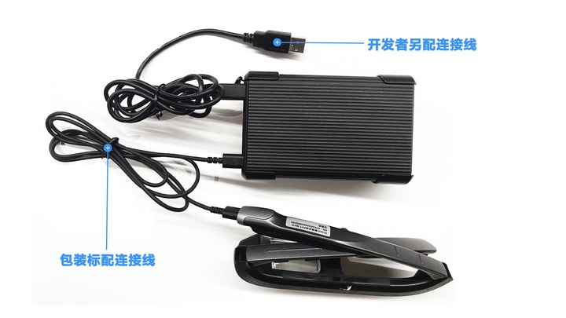

Rokid Glass 软件开发文档


一、介绍
- 本文档面向Rokid Glass的开发者，介绍了开发者如何在Rokid Glass上开发应用。
- 本文档包含了系统信息，开发指南，Rokid Glass SDK使用文档及示例，OS设计规范，FAQ和论坛。
- 详细页面跳转请点击gitbook左上角“目录”。
二、系统信息说明
基本信息
| 名称 | 简介 |
|---|---|
| CPU | Amlogic-S905D3 |
| RAM | 2G |
| ROM | 32G |
| IMU | 9轴（陀螺仪、加速度计、磁力计），支持ROTATION_VECTOR |
| Camera | 拍照最大分辨率3264x2448，录像1080p@30fps |
| GPS&4G | 序列号为082开头的设备支持GPS&4G，用法同标准Android |
| 屏幕 | 分辨率1280x720，横屏，320dpi |
| 基于Android9.0 | 开发工具AndroidStudio |
| 交互方式 | 触摸板、按键、语音、头控 |
三、简要开发指南
眼镜开发和安卓开发的区别：
- Glass没有触摸屏，只有触摸板，部分类型的控件需要自定义焦点控制。
- Glass上建议可以不显示相机预览（preview），因为AR眼镜可透视真实世界。具体实现可参考相机映射
- Glass风格的UI：参考UI设计规范和UI SDK。
如果需要使用系统内置的AR录屏功能，并需要叠加Camera预览作为录屏背景，需注意：
- App使用Camera API2接口；
- 需要叠加Camera预览的Activity，开启时需发送广播
android.intent.action.CAMERA_WALLPAPER_START_PREVIE - 结束时发送广播
android.intent.action.CAMERA_WALLPAPER_STOP_PREVIE
注意：开发前，请准备另外一根开发连接线，设备配置的线请不要作为开发使用，连接方式如下图：

眼镜开发的步骤：
- 新建Android工程，或者基于现有的Android工程改造。
- 按照Android TV的开发模式，用Glass触摸板控制焦点变化（可以参考触摸板键值说明）。
恭喜你！可以在眼镜上用触摸板使用自己的App了！ - 可以使用提供的基础SDK进行Glass语音和头控的交互方式进行开发。
- 根据应用场景，可以选择对应的功能SDK来加快开发速度。
四、SDK简介和下载
基础SDK
| 名称 | 简介 |
|---|---|
| Glass UI | 1. 提供一套在Rokid Glass上开发应用的基础UI库 2. 真实世界和相机预览（Preview） 之间的关系以及相机映射(alignment) |
| 语音交互 | 可以通过集成离线语音sdk，使用系统内置的语音助手控制Rokid Glass |
功能SDK
| 名称 | 简介 |
|---|---|
| 人脸离线识别 | 人脸识别SDK接入和接口说明 |
| 人脸在线识别 | 人脸在线识别的接口规范和使用 |
| 车牌识别 | 车牌识别提供车牌检测+车牌识别功能 |